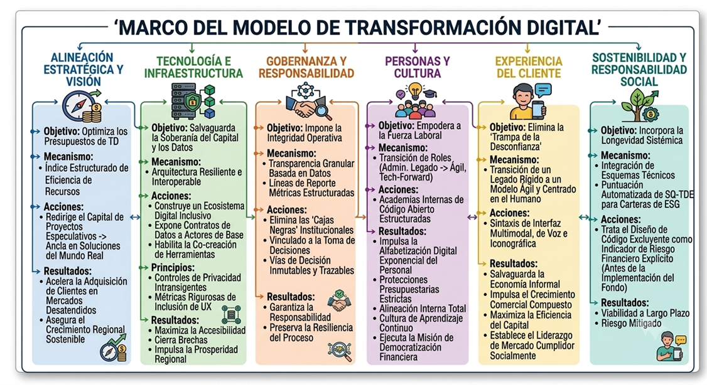

Construyendo transformación digital ética
El marco SQ-EDT se organiza en seis columnas interrelacionadas que trabajan juntas para crear un enfoque sólido, ético y sostenible de la transformación digital.
Estrategia y Visión
Optimiza los presupuestos de transformación digital a través de un índice estructurado de eficiencia de recursos. Al desviar el capital de proyectos especulativos y anclarlo en soluciones creadas para las necesidades reales de los usuarios, este pilar acelera la adquisición de clientes dentro de mercados desatendidos y asegura un crecimiento regional sostenible.
Tecnología y Arquitectura
Salvaguarda el capital público y la soberanía de datos regional mediante una arquitectura altamente resiliente e interoperable. Este marco construye un ecosistema digital inclusivo al exponer de manera segura contratos de datos a los actores económicos de base, permitiéndoles co-crear herramientas a la medida para el comercio informal.
Guiado por controles de privacidad inflexibles y rigurosas métricas de inclusión en la experiencia del usuario, este pilar garantiza que cada despliegue técnico maximice la accesibilidad, cierre las brechas de infraestructura sistémica y fomente la prosperidad regional sostenible.
Gobernanza
Impone la integridad operativa mediante mecanismos de transparencia granulares y basados en datos. Esta columna elimina las "cajas negras" institucionales mediante la implementación de canales de reporte estructurados y medidos, vinculados directamente a los niveles de toma de decisiones. Al establecer vías de decisión inmutables y trazables, junto con robustos controles de soberanía de datos, el marco garantiza una rendición de cuentas completa y preserva la resiliencia de los procesos bajo severas restricciones regionales y operativas.
Personas y Cultura
Empodera a la fuerza laboral interna mediante la transición de los roles de los empleados desde tareas administrativas rígidas y heredadas hacia responsabilidades ágiles y orientadas a la tecnología. A través de academias internas estructuradas y de código abierto, el marco impulsa una alfabetización digital exponencial del personal mientras mantiene estrictos límites presupuestarios. Esto asegura una alineación interna total, construye una cultura de aprendizaje continuo y establece una fuerza laboral activa que ejecuta a la perfección la misión más amplia de democratización financiera del banco.
Experiencia del Cliente
Elimina la "Trampa de la Desconfianza" al transicionar al banco desde flujos de trabajo tradicionales rígidos y centralizados hacia un modelo de entrega ágil y centrado en el ser humano. Mediante sintaxis de interfaz multimodales, de voz e iconográficas respaldadas científicamente, el marco protege sistemáticamente a la economía informal de la exclusión digital.
Esta inclusión estratégica impulsa un crecimiento empresarial compuesto, maximiza la eficiencia del capital y posiciona al banco como un líder de mercado pionero y socialmente responsable en economías en desarrollo.
Sostenibilidad y Responsabilidad Social
Incorpora la longevidad sistémica directamente en los esquemas técnicos a través de una puntuación automatizada SQ-TDE para carteras ESG, tratando el diseño de código excluyente como un indicador explícito de riesgo financiero antes de la implementación de los fondos.
Cómo Funciona en Conjunto
Las seis columnas no son elementos aislados, forman un sistema integrado donde cada columna apoya y refuerza a las demás. Esto crea un enfoque holístico para la transformación digital ética que garantiza la coherencia en todos los aspectos de su organización.

Primeros Pasos
¿Listo para implementar el marco en su organización? Nuestros consultores pueden ayudarle a:
- Evaluar su estado actual en las seis columnas
- Identificar brechas y oportunidades
- Desarrollar una hoja de ruta de implementación personalizada
- Desarrollar la capacidad interna para una transformación sostenible
¿Listo para Saber Más?
Explore nuestros servicios o lea nuestras últimas perspectivas sobre la transformación digital ética.